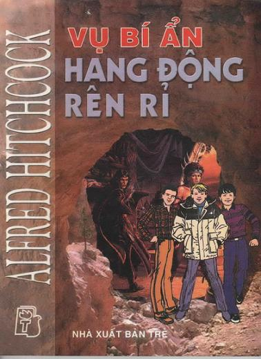

Chào các bạn đọc giả! Hôm nay tôi xin hân hạnh tặng cho các bạn một câu chuyện mới về Ba Thám Tử Trẻ. Nếu các bạn vẫn chưa biết Ba Thám Tử Trẻ là ai, thì xin phép cho tôi được giới thiệu... Hannibal Jones, Peter Crentch và Bob Andy, cả ba quê quán ở Rocky, một thành phố nhỏ bang Californie chỉ cách Hollywood có vài cây số.
Vào một ngày đẹp trời, ba nhân vật chính của ta đã nảy ra ý thành lập một nhóm - Ba Thám tử Trẻ - có chức năng giải các vụ bí ẩn gặp phải.
Thủ lĩnh không thể chối cãi của Ba Thám Tử là Hannibal Jones. Hannibal có đầu óc suy luận lôgíc, luôn giữ bình tĩnh và không bao giờ cho phép ai làm cậu quên đi mục đích. Sau đó là Peter Crentch, một anh chàng lực sĩ thực thụ, có cơ bắp rất lợi hại khi rơi vào tình huống gay go.
Số ba của bộ ba là Bob Andy, chủ yếu lo về lưu trữ và nghiên cứu.
Bộ tham mưu của Ba Thám Tử đặt trong một chiếc lán cũ giấu trong lòng Thiên Đường Đồ Cổ, là một kho bãi đồ linh tinh do chú Titus và thím Mathilda của Hannibal quản lý.
“Điều tra các loại”, đó là phương châm của Ba Thám Tử Trẻ. Đó là trường hợp của hôm nay, khi ta sẽ gặp ba bạn ở một trang trại trên miền núi Californie, đang điều tra về một hang động rên rỉ não lòng, một tên cướp truyền thuyết không chịu chết và một vài sự kiện lạ lùng diễn ra trong một thung lũng hoang vắng.
Những gì ba bạn điều tra ra sẽ làm cho các độc giả hồi hộp suốt quyển sách.... Và các bạn sẽ không ngừng cắn móng tay hoặc ngọ nguậy trên ghế nếu các bạn thuộc típ dễ bị căng thẳng. Cho nên, hãy thận trọng!
Alfred Hitchcock
MỤC LỤC
Lời Tựa
1. Thung Lũng Rên Rỉ
2. Quá Nhiều Tai Nạn
3. Con Quỷ
4. Điều Tra
5. Hang Động El Diablo
6. Đường Hầm Mật
7. Tiếng Động Đêm Khuya
8. El Diablo
9. Tấn Công Đột Ngột
10. Kế Hoạch Của Hannibal
11. Hình Bóng Dưới Đáy Biển
12. Bị Nhốt
13. Bộ Xương Và… Con Quái Vật
14. Sinh Thể “Đen Và Bóng”
15. Ánh Sáng Trong Bóng Tối
16. Câu Chuyện Kim Cương
17. El Diablo Tái Xuất Giang Hồ
18. Vạch Mặt El Diablo
19. Một Câu Chuyện Cho Alfred Hitchcock